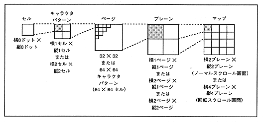
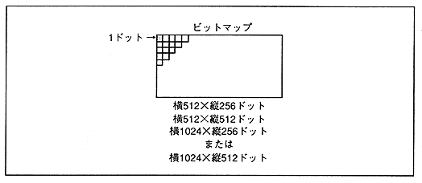

Figure 3.18 Relationship between bitmap scroll screen and data settings

Specified by the coordinates of the start point and end point
Specified by the coordinates of the start point and end point line
Specified by sprite character pattern